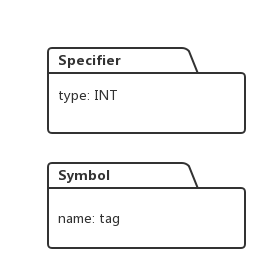

本节，我们看看对于枚举类型，C语言编译器是如何解析的。我们使用下面的实例去实现语法解析和类型系统的建立：
enum tag {a, b, c = 5, d} x;上面的枚举定义会被C编译器转义成下面的形式：
enum tag;
int x;
int a = 0;
int b = 1;
int c = 5;
int d = 6上面的代码中，enum被当做一种数据类型， x 被当做整形对待，tag和x没什么用，会在最终生成代码中给抛弃掉。
我们先看看枚举类型的解析语法：
TYPE_SPECIFIER -> ENUM_SPECIFIER
ENUM_SPECIFIER -> ENUM_NT NAME_NT OPT_ENUM_LIST
ENUM_NT -> ENUM
ENUMERATOR_LIST -> ENUMERATOR
EMERATOR_LIST -> ENUMERATOR_LIST COMMA ENUMERATOR
ENUMERATOR -> NAME_NT
NAME_NT -> NAME
ENUMERATOR -> NAME_NT EQUAL CONST_EXPR
CONST_EXPR -> NUMBER
OPT_ENUM_LIST -> LC ENUMERATOR_LIST RC
从上面语法中，我们可以看到ENUM其实是关键字enum的标签，ENUMRATOR对应枚举类型中的变量定义，例如 a, b就对应于非终结符ENUMRATOR, 枚举类型中的变量赋值，例如 int c = 5, 对应非表达式：ENUMERATOR -> NAME_NT EQUAL CONST_EXPR。
我们看看解析器对枚举类型的解析流程：
1: 读取关键字enum, 并返回标签ENUM.
2: 通过表达式ENUM_NT -> ENUM 进行reduce, 此时设置一个全局变量enumVal为0，这个全局变量的值将会在后面赋值给各个枚举变量。
3：读入变量名tag, 通过NAME_NT -> NAME 进行reduce, 此时为tag创建一个Symbol对象，于是属性堆栈便有了一个对象：
4: 读入左括号，返回标签LC, 读入变量a, 返回标签NAME,通过NAME_NT -> NAME做reduce, 同时为变量a构建一个Symbol 对象，于是属性堆栈如下：
5: 根据ENUMERATOR -> .NAME_NT 做reduce,此时生成一个Specifier对象，Specifier 的类型设置为CONSTANT, 并将全局变量enumVal的值0，同时增加enumVal的值，让enumVal从0变为1。设置到Specifier对象里，同时将该对象加入变量a 对应Symbol的类型列表：
6: 根据表达式ENUMERATOR_LIST -> .ENUMERATOR做reduce, 同时把堆栈顶部的Symbol对象出栈，由于该Symbol对象已经加入符号表，因此出栈不影响后面生成代码。
7：读入逗号，返回标签COMMA, 读入变量名b,返回标签NAME, 通过NAME_NT -> .NAME进行reduce的同时，为b生成一个Symbol对象。
8: 根据表达式ENUMERATOR -> .NAME_NT构造Specifier对象，将对象的constantValue域设置成enumVal, 此时enumVal的值是1：
9: 此时解析堆栈顶部的非终结符满足表达式：ENUMERATOR_LIST -> .ENUMERATOR_LIST COMMA ENUMERATOR ,于是进行reduce,同时将当前顶部的Symbol出栈，并将左边的非终结符：ENUMERATOR_LIST压入解析堆栈
10：读入逗号，读入变量c, 根据表达式NAME_NT -> .NAME进行reduce, 同时生成一个Symbol对象。
11： 读入等号，返回标签EQUAL, 读入等号后面的数字，返回标签NUMBER,通过表达式CONST_EXPR -> NUMBER 进行reduce, 同时将数字压入到属性堆栈。
12： 根据表达式ENUMERATOR -> .NAME_NT EQUAL CONST_EXPR 进行reduce, 为前面生成的Symbol构造一个Specifier对象，同时把上一步压入属性堆栈的数值取出，赋值给全局表里enumVal, 并将变量的值设置到Specifier对象中，然后enumVal的值加1，使得它的值为6：
13: 再次根据表达式ENUMERATOR_LIST -> .ENUMERATOR_LIST COMMA ENUMERATOR 进行reduce, 将属性堆栈顶部的Symbol对象出栈。并将ENUMERATOR_LIST压入解析堆栈。
14： 读入逗号，读入变量d,返回标签NAME, 根据表达式NAME_NT -> .NAME进行reduce,同时生成一个Symbol对象。
15： 根据表达式ENUMERATOR -> .NAME_NT, reduce时，生成一个Specifier对象，将它的constantValue的值设置成enumVal, 也就是6，同时让enumVal加1变成7：
16: 再次根据表达式ENUMERATOR_LIST -> .ENUMERATOR_LIST COMMA ENUMERATOR 进行reduce, 将属性堆栈顶部的Symbol出栈，同时在解析堆栈压入非终结符ENUMERATOR_LIST 。
17：读入右括号}, 跟着使用表达式：OPT_ENUM_LIST -> .LC ENUMERATOR_LIST RC 进行reduce, 然后再根据表达式：ENUM_SPECIFIER -> .ENUM_NT NAME_NT OPT_ENUM_LIST 做reduce.
18: 根据表达式TYPE_SPECIFIER -> .ENUM_SPECIFIER做reduce,此时生成一个Specifier对象，它的类型是int:

接着再根据表达式:TYPE_OR_CLASS -> .TYPE_SPECIFIER, SPECIFIERS -> .TYPE_OR_CLASS, OPT_SPECIFIERS -> .SPECIFIERS 连续进行reduce, 将非终结符OPT_SPECIFIERS压入解析堆栈。
19： 将右括号后面的x读入，返回标签NAME, 根据表达式 NEW_NAME -> .NAME 进行reduce, 同时为变量x生成一个Symbol对象：
接着再根据表达式：VAR_DECL -> .NEW_NAME，EXT_DECL -> .VAR_DECL，EXT_DECL_LIST -> .EXT_DECL 进行reduce, 把非终结符EXT_DECL_LIST压入解析堆栈。
20： 读入最后的分号，得到标签SEMI, 根据表达式EXT_DEF -> .OPT_SPECIFIERS EXT_DECL_LIST SEMI 进行reduce, 同时把Specifier对象添加到x变量对应的Symbol对象的类型列表中：
21： 根据表达式：EXT_DEF_LIST -> .EXT_DEF_LIST EXT_DEF进行reduce,同时将堆栈上的Symbol对象出栈。然后全局非终结符被压入堆栈，此时解析流程结束，进入接收状态。
具体的代码调试讲解流程请参看视频：
用java开发编译器